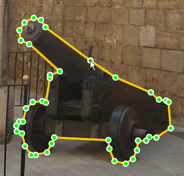

|
Currently computers have difficultly with recognizing objects in images. While practical solutions exist for a few simple classes, such as human faces or cars, the more general problem of recognizing all the different classes of objects in the world (e.g. guitars, bottles, telephones) remains unsolved. Computer vision researchers are currently investigating methods that can recognize and localize thousands of different object categories in complex scenes. A key component of these algorithms is the data used to train the computer's model of each object. The goal of LabelMe is to provide an online annotation tool to build a large database of annotated images by collecting contributions from many people. You can contribute to the database by visiting the annotation tool. |
|
Labeling instructions When you enter the tool, an image from the database will be randomly selected and shown. You can help by annotating as many objects as you can. Note that previously labeled objects may appear on the image. Please do not label previously labeled objects. Once you have completed the image, you can view a new image by pressing the "show next image" button. The following steps describe how to label an object:
1. Start by pressing the left
mouse button at some point along the boundary of the object.
|
 cannon |
|||||||||||||
Examples Good object labels:
Bad object labels:
| ||||||||||||||
Labeling guidelines The following are some recomendations for how to provide annotations that are as useful as possible. View the entire image: Make sure that your browser occupies the entire screen and that you scroll to see the entire image. If you label an object on the edge of your browser, make sure to scroll so that the entire object is visible. Follow the object outline: Click on top of the object boundary so that the polygon accurately delineates the object outline. The ideal outline should be good enough for somebody to recognize the object just by seeing the drawn polygon. Labeling occluded objects: Sometimes objects will be only partially visible. This is especially true for regions like roads, buildings, etc., which become difficult to label when there are many occlusions. We recommend in these cases to complete the boundary as if they were not occluded. Object naming: Use common English names for objects. Use a name that you think other people are likely to use to describe the same object. You can use several words to describe an object. Example object names: sky, tree, building, road, sidewalk, person, car, chair. |
||||||||||||||
Advanced features Delete segments: If you want to delete one segment
of the polygon before finishing the polygon, press the Modify control points: Once you have finished a polygon, you can modify individual control points. If you click on top of the polygon, the control points will appear. You can select one of the control points (hold the left mouse button down) and move it to a new position. Then click anywhere in the image to deselect the polygon. This will also save the modified polygon. Delete entire polygon: Select the polygon. You will have the option to delete the polygon. You can only edit polygons that you have entered before. You can not delete polygons by other users. | ||||||||||||||
|
Our goal is not to provide a new benchmark for computer vision. The goal of the LabelMe project is to provide a dynamic dataset that will lead to new research in the areas of computer vision and computer graphics. More details about the dataset are available in our publication: |